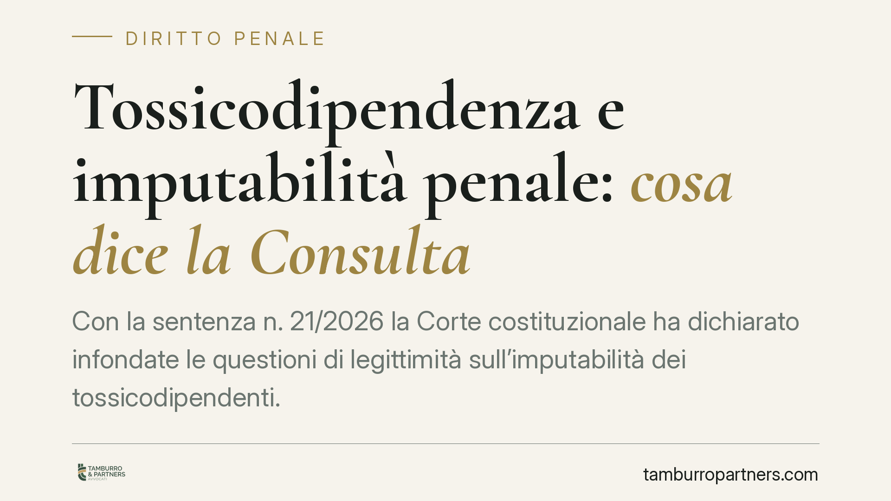

Tossicodipendenza e imputabilità penale: cosa dice la Consulta
Con la sentenza n. 21/2026 la Corte costituzionale ha dichiarato infondate le questioni di legittimità sull'imputabilità dei tossicodipendenti. La dipendenza, da sola, non esclude né attenua la capacità di intendere e di volere. Solo la cronica intossicazione, prevista dall'art. 95 c.p., può incidere sulla responsabilità penale. Una pronuncia che conferma un orientamento consolidato e definisce confini precisi per la difesa.

Il caso sottoposto alla Consulta
Il Tribunale di Bergamo aveva sollevato questioni di legittimità costituzionale sulla disciplina dell'imputabilità applicata a chi commette reati in stato di tossicodipendenza. Il dubbio: trattare il tossicodipendente alla stregua di un soggetto pienamente capace violerebbe il principio di personalità della responsabilità penale sancito dall'art. 27 della Costituzione.
La Corte costituzionale, con sentenza n. 21/2026 (relatore Francesco Viganò), ha respinto i dubbi, confermando l'impianto del codice penale. La dipendenza da sostanze non è, in sé, una condizione che annulla la lucidità del soggetto.
Inquadramento normativo
Il codice penale distingue con precisione diverse situazioni legate all'uso di sostanze.
L'art. 92 c.p. stabilisce che l'ubriachezza o l'intossicazione volontaria o colposa non esclude né diminuisce l'imputabilità. Chi assume sostanze e poi delinque risponde del reato come chiunque altro. L'art. 93 c.p. estende la regola all'azione di stupefacenti.
L'art. 94 c.p. prevede un'aggravante per chi commette il reato in stato di ubriachezza o intossicazione abituale: qui la pena è aumentata, non ridotta.
L'unica eccezione rilevante è l'art. 95 c.p., che richiama gli artt. 88 e 89 c.p. (vizio totale e parziale di mente) per i casi di cronica intossicazione da alcol o sostanze. Si tratta di una condizione patologica stabile e irreversibile, assimilabile a una vera e propria malattia, che compromette in modo permanente le facoltà psichiche. È un concetto ben diverso dalla semplice dipendenza o dall'assunzione episodica.
La Consulta ha ritenuto che questo sistema rispetti l'art. 27 Cost.: la responsabilità resta personale perché la legge punisce chi conserva la capacità di autodeterminarsi, riservando l'esenzione o la riduzione ai soli casi in cui la patologia ha effettivamente intaccato la mente.
Cosa significa in concreto
La pronuncia chiarisce un punto spesso frainteso: essere tossicodipendenti non è una scusante penale. La dipendenza non apre automaticamente la strada a un'assoluzione per vizio di mente né a uno sconto di pena.
Per l'imputato tossicodipendente questo significa che la linea difensiva non può fondarsi sulla dipendenza in quanto tale. Occorre dimostrare qualcosa di più: che al momento del fatto esisteva una condizione di cronica intossicazione, idonea a escludere (vizio totale) o scemare grandemente (vizio parziale) la capacità di intendere e di volere.
La differenza è sostanziale. La dipendenza è una condizione di assuefazione; la cronica intossicazione è uno stato patologico documentabile sul piano clinico. Provare la seconda richiede un percorso probatorio rigoroso, in genere affidato a una perizia psichiatrica.
Resta inoltre la distinzione tra piano penale e piano sanzionatorio-trattamentale. Il riconoscimento della tossicodipendenza può rilevare, in altri contesti, ai fini di misure alternative, affidamento terapeutico o percorsi di recupero. Ma è un tema diverso dall'imputabilità, che riguarda la sussistenza stessa della responsabilità.
Perché la distinzione conta nel processo
La scelta della strategia difensiva dipende dalla documentazione disponibile. Invocare l'art. 95 c.p. senza un quadro clinico solido rischia di essere controproducente: può aprire, al contrario, la strada all'aggravante dell'intossicazione abituale (art. 94 c.p.).
La valutazione va quindi fatta a monte, esaminando la storia clinica del soggetto, le relazioni dei servizi per le dipendenze e la perizia disponibile, prima di impostare qualsiasi richiesta.
Cosa fare in concreto
- Raccogliete subito la documentazione clinica: cartelle dei SerD, certificazioni medico-sanitarie e ogni attestazione utile a ricostruire la condizione al momento del fatto.
- Distinguete dipendenza e cronica intossicazione: verificate con un consulente tecnico se esistono i presupposti per invocare l'art. 95 c.p.
- Valutate la perizia psichiatrica: senza un accertamento tecnico, l'incidenza sull'imputabilità resta affermazione non provata.
- Considerate i percorsi alternativi: dove l'imputabilità non è in discussione, verificate l'accesso a misure terapeutiche e di recupero.
- Impostate la difesa per tempo: la condizione psichica rilevante è quella del momento del reato, non quella successiva.
Disclaimer
Contributo informativo a cura di Tamburro & Partners - Avv. Giuseppe Tamburro. Non costituisce parere legale.
Ogni condominio ha una storia a sé.
Se gestisci un'amministrazione e vuoi un confronto su una specifica questione condominiale, scrivi allo studio. Ti rispondiamo entro un giorno lavorativo.